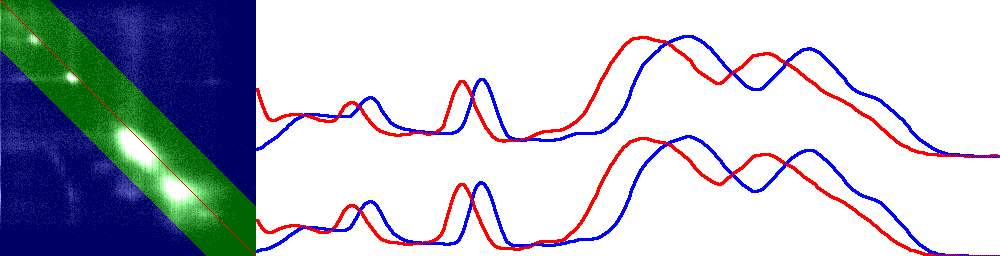
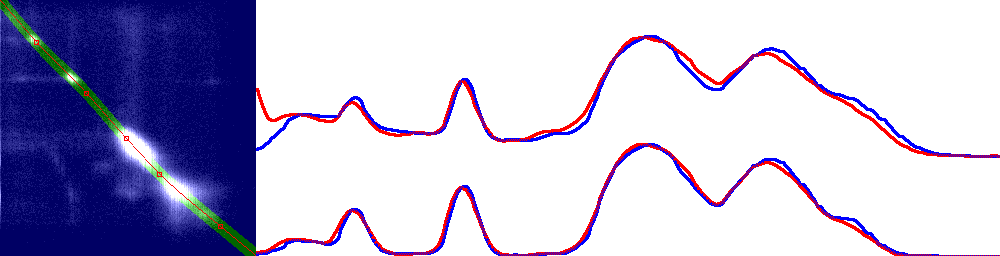

Digital reconstruction of cartoon movies based on genetic algorithms

- module1: tracking / camera movement detection [genetic algorithm]
- module2: fixing brightness fluctuations between frames [genetic algorithm]
- module3: removing dust and scratches [static algorithm]
- module4: building large static backgrounds from multiple frames [static algorithm]

| Paper on module2, Czech only preview (2002) |
Vyrovnání globálního kolísání jasu v sekvencích obrázků
Úvod/Abstrakt
V sekvencích obrázků se mohou z různých důvodů objevovat nežádoucí
globální fluktuace jasu. Protože informace potřebná k jejich detekci
a odstranění leží v srovnání jasů týchž objektů na různých snímcích,
s využitím nezávislé komponenty sledování pohybu budeme porovnávat
histogramy oblastí z obou snímků, které obsahují stejné objekty.
Transformaci jasu zkonstruujeme s pomocí genetického algoritmu
jako splajn nejlépe odpovídající námi zvoleným kritériím.
Vyrovnávání jasu
Konstrukce jasové transformace
Globální transformaci jasu (kde jas je reálné číslo 0..1) definujeme jako neklesající
funkci tl:R->R procházející body [0,0] a [1,1].
Jasovou transformací Tl:snímek->snímek pak rozumíme nahrazení všech pixelů
s jasem j pixelem odpovídající barvy s jasem tl(j). Barevnou složkou snímků se
dále nezabýváme, pracujeme pouze s jasem.
Nežádoucí globální transformace jasu se kterými se můžeme v praxi setkat
jsou velmi různorodé, jednoduchá gamma korekce není dostatečným opravným
prostředkem.
Chceme použít co nejrobustnější funkci schopnou postihnout co nejvíce změn jasu,
ke kterým může například při tvorbě filmu, degradaci filmového matriálu
a digitalizaci filmu dojít,
u které ale půjde (v případě, že očekáváme pouze jednoduché transformace)
snadno regulovat určitá míra hladkosti a jednoduchosti.
f tedy budeme reprezentovat jako splajn procházející
několika body, z nichž pouze krajní [0,0] a [1,1] jsou pevné.
Zbylé body najde genetický
algoritmus tak, aby maximalizoval optimalitu transformace (viz kritéria
optimality níže).
V naší implementaci jsme použili Fritsch-Carlsonův splajn, nicméně i
jiné splajny dávaly srovnatelné výsledky.
Jako optimální počet bodů, kterými splajn prochází,
se v případě animovaného filmu Rumcajs ukázalo číslo pět (tj. tři pohyblivé).
Kritéria optimality
Popíšeme tři schémata umožňující posoudit kvalitu jasové transformace Tl.
-Porovnání histogramů snímků Fa a Tl(Fb)
Jako jednoduché kritérium optimality transformace Tl je možné brát podobnost
histogramů Fa a Tl(Fb). Porovnání vychází z očekávání, že ve filmových sekvencích
většinou delší dobu zůstávají v záběru stejné objekty, které mohou v histogramu
celého snímku produkovat zřetelné lokální extrémy. Při vhodně navrženém
kritériu podobnosti histogramů by pak genetický algoritmus mohl nacházet
transformace, které nejlépe mapují jeden histogram do tvarů podobných
druhému histogramu. Bohužel v praxi se obsah sousedních snímků a jejich
histogramy relativně často mění takovým způsobem
(do záběru vstupují nové objekty, jiné mizí), že pouze z histogramů
celých snímků není možné vhodnou transformaci jasu určit.
Tuto cestu jsme tedy opustili.
-Porovnání histogramů jednotlivých objektů nalezených v Tg(Fa) i Tl(Fb)
Problémy předchozí metody je možné odstranit nalezením a
porovnáním pouze objektů nalezených v obou snímcích.
Pokud se objekty smršťují nebo rozpínají (vzdalují nebo přibližují),
je nezbytné provést s nimi takové geometrické transformace Tg, abychom
porovnávali pixel jednoho objektu proti pixelu druhého objektu.
Vzhledem k výpočetní náročnosti vyhledávání objektů v obou snímcích
je vhodné nehledat objekty znovu pro každou novou transformaci jasu, ale pouze
jednou na začátku výpočtu
a do kritéria podobnosti objektů v Tg(Fa) a Fb přitom zahrnout podobnost
jejich textur po odečtení jejich průměrného jasu (zůstane informce téměř
nezávislá na zatím neznámé možné změně jasu).
Toto kritérium by bylo vhodné pro obecný filmový materiál.
-Porovnání histrogramů průniku Tg(Fa) a Tl(Fb)
Primárním cílem této práce bylo vyřešit zadaný problém
pro konkrétní případ animovaných večerníčků Rumcajs.
Obraz v nich bývá složen téměř výhradně z dvourozměrného statického pozadí a
po něm se pohybujících plochých postaviček, které většinou zabírají pouze
malou část záběru.
To umožňuje použít jednodušší a efektivnějí schéma porovnávání vhodné pouze pro
podobná zadání.
Pro celý výpočet jasové transformace nejprve jednou s využitím
nezávisle vyvíjené komponenty
sledování pohybu kamery najdeme geometrickou transformaci Tg snímku Fa,
po které budeme moci porovnávat pixel snímku Tg(Fa) proti korespondujícímu
pixelu snímku Fb.
Následně už pracujeme pouze s částí Tg(Fa) a částí Fb, které si obsahem
odpovídají. Kritériem optimality jasové transformace Tl se pak stane
rozdílnost histogramů Tg(Fa) a Tl(Fb) (genetický algoritmus se ji
snaží minimalizovat) definovaná jako
SUM[i=0..255] abs( Tl(Fb).hist[i]-Tg(Fa).hist[i] )
(F.hist[i] značí počet pixelů s jasem i ve snímku F)
a dále zahrnující následující modifikace.
Vyhlazení histogramů
U dostatečně velkých obrázků nemá náhodný šum v texturách vliv
na podobnost histogramů. Ovšem
při našich geometrických transformacích dochází ke změně charakteristik textur
a šumu, při bilineární interpolaci jsou extrémní jasy v textuře
interpolovány s jasy sousedních pixelů s neextrémními jasy,
takže textura transformovaného snímku obsahuje užší spektrum hodnot jasu.
Následné měření podobnosti histogramů usnadní vyhlazení histogramů
- taková transformace histogramů, po které budou histogramy původního
snímku i transformovaného snímku s redukovaným šumem opět podobné.
Vyhlazování implementujeme jako iterační proces, ve kterém pro každé j
malou část počtu pixelů s jasem j histo[j] přesuneme do histo[j-1] a histo[j+1].
Krok opakujeme dokud poměr SUM histo[j]-(histo[j-1]+histo[j+1])/2
k počtu zpracovávaných pixelů překračuje zadanou míru hrubosti histogramu
(pro histogram o 256 prvcích nad obrázky v TV rozlišení se osvědčilo 0.01).
Zvýraznění minoritních extrémů v histogramu
V delších pásmech jasů,
které se ve snímcích Tg(Fa) a Fb téměř nevyskytují (neobydlená pásma),
by mohly být i zcela chybné transformace považovány za správné
a ojedinělé pixely daných jasů by byly nesprávně transformovány.
Proto po vyhlazení transformujeme histogramy tak,
aby byly nízké lokální extrémy zvýrazněny
a vysoké potlačeny - hist[i] nahradíme výrazem
(log(hist[i]+100)-log(100))*1000.
Uvedená transformace pomáhá najít takovou transformaci, která i drobný lokální
extrém v neobydleném pásmu namapuje na korespondující extrém v druhém histogramu.
Preference jednoduché transformace
Pokud se v neobydleném pásmu nevyskytují žádné vhodné lokální extrémy,
kterými by se optimalizační proces řídil, nelze o průběhu transformační
funkce rozhodnout. Oprávněně však lze očekávat, že správná transformace
je ve většině případu spíše jednoduchá hladká křivka s minimem inflexních bodů.
Do kritéria optimality tedy zahrneme penaltu
abs(tl(i-1)+tl(i+1)-2*tl(i)) / (Tg(Fa).hist[i]+Tl(Fb).hist[i]+10) * 2000000 pro i=0..255
penalizující "klikatost" křivky a podporující její "hladkost" v neobydlených
pásmech (čitatel vyjadřuje klikatost, jmenovatel obydlenost).
Pásmo tolerovaného šumu
Pokud se korespondující pixely porovnávaných snímků Tg(Fa) a Tl(Fb)
(Tl je zde dosud nejlepší nalezená jasová transformace, na začátku výpočtu identita)
výrazně liší (abs(p1-p2)>DELTA), téměř jistě leží v oblasti, kde se snímky liší.
Takové pixely nezahrnujeme do porovnávání snímků (do histogramů).
V případě, že rozdíl není velký (abs(p1-p2)<=DELTA), mohou pixely ležet
v pro nás podstatné oblasti, kde se snímky svým obsahem shodují; odchylka
pak bývá způsobena pouze drobnými nepřesnostni Tg a šumem v textuře,
který jsme se rozhodli ještě tolerovat.
Zužování pásma tolerovaného šumu
Při stanovení šířky pásma šumu (DELTA) hrají roli dva faktory. Chceme aby program dokázal
zdetekovat co největší transformace jasu (např. změnu jasu 100/255 na 150/255,
chceme vysoké DELTA).
Zároveň chceme, aby program rozeznal oblasti, kde se snímky liší,
a nezahrnul je do výpočtu místo toho aby vyrovnával jas tak aby se podobaly
(chceme nízké DELTA).
Na začátku výpočtu tedy nastavíme vysoké DELTA (50) a po určitých počtech
generací genetického algoritmu ho snižujeme až na hodnoty kolem 10.
Zužování pásma postupně omezuje prostor v kterém se mohou úspěšně
pohybovat alternativní jasové transformace generované genetickým algoritmem,
pásmo se pokaždé zúží kolem dosud nejlepší nalezené jasové transformace.
Pro zvýšení efektivity výpočtu nepracujeme vždy s celými snímky ale
pouze s jejich histogramy, které při každé změně DELTA aktualizujeme.
Využití pixelů mimo tolerovaný šum
V situaci, kdy zcela ignorujeme pixely Tg(Fa) a Tl(Fb), které spolu
nekorespondují, tj. do výpočtu není zahrnut objekt pohybující se nad
statickým pozadím, např. jediný tmavý objekt nad jinak světlým pozadím,
se může stát, že pro histogramy ztratíme rozhodující oblasti palety,
široká pásma histogramů zůstanou neobydlená.
Kritérium optimality transformace by pak vůbec nezahrnovalo jak transformovat
jas tmavého pohybujícího se objektu. Proto paralelně s histogramy
respektujícími pásmo tolerovaného šumu pracujeme i s histogramy
zahrnujícími i pixely překračující toleranci. Výsledky zjištěné nad těmito
histogramy se stávájí součástí výsledného kritéria optimality s vahou 0.33
(výsledky zjištěné nad dosud popisovanými histogramy obsahujícími pouze
pixely z pásma tolerovaného šumu mají váhu 0.67).
Zpracování sekvence
Sekvence je posloupnost snímků F1 až FN taková, že mezi snímáním Fn
a Fn+1 nedošlo k výraznému pohybu nebo zoomu kamery a oba snímky
obsahují podobné objekty v popředí i podobné pozadí.
Náš systém postupně vyrovnává jas snímků F2 až FN s referenčním snímkem Fref.
Referenčním snímkem se na začátku výpočtu stává snímek F1.
V případě, že společná část snímků Fref a Fn má příliš malý průnik
(kamera se např. posunula o polovinu šířky snímku)
a n>ref+1, novým referenčním snímkem se stane Fn-1, u kterého jsme jas již vyrovnali.
V případě, že společná část snímků Fref a Fn má příliš malý průnik
a n=ref+1, mezi snímky Fn-1 a Fn jsme nalezli rozhraní sekvencí.
Budoucí práce
Záměrné pomalé změny jasu
V situaci kdy objekt náhle zřetelně změní jas nevzniká žádná komplikace,
výše popsaný optimalizační postup nebere náhle změněný objekt v potaz
a vygeneruje korektní transformační funkci.
Pokud je ale záměrná změna jasu pomalá, systém změnu může eliminovat jako chybu.
Při hledání transformace jasu snímku F(n+k) vůči referenčnímu snímku Fn
systém zcela eliminuje změnu jasu pro malá k, tj. třeba pro snímky
Fn+1 až Fn+15. Snímek Fn+16 a další už ale obsahují natolik odlišný jas,
že je považován za záměrnou změnu a není korigován vůbec.
V sekvenci, která je výstupem programu,
pak záměrná plynulá změna jasu začne až o 16 snímků později a to skokem.
V současné implementaci není problém ošetřen.
Pohyb nad širokou scénou
Pokud kamera v jednom záběru odjede do strany o n šířek snímku,
zpracování celé sekvence si vyžádá minimálně 2*n změn referenčního snímku.
Protože jas celé sekvence přizpůsobujeme jasu prvního snímku,
vyžádá si korekce jasu posledního snímku
složení minimálně 2*n nezávisle detekovaných jasových transformací
(k poslednímu snímku vzdálenému
o n*šířka_snímku se dostaneme přes minimálně 2*n referenčních snímků vzdálených
vždy nejvýše o šířka_snímku/2).
Všechny drobné chyby jasových transformací se skládáním násobí,
takže pro rostoucí n bude výsledek divergovat.
V takových situacích by bylo provizorním řešením zpracovat sekvenci
nezávisle po menších částech.
Související komponenty
Celý implementovaný systém nyní zahrnuje tyto komponenty
-subpixelové sledování pohybu kamery (pravo-levo, nahoru-dolů, zoom,
rozšiřitelné na obecnější transformaci)
optimalizované pro Rumcajse, se spolehlivostí zatím kolem 90-95%,
vyžaduje další vývoj
-zde popsané vyrovnávání jasu v sekvencích, optimalizované pro Rumcajse
ale pravděpodobně bez zásahů vhodné i pro jiné animované filmy,
pro obecný obrazový materiál použitelné pouze s vyspělou komponentou
sledování pohybu
-velmi kvalitní eliminace
kolem 95% škrábanců a prachu založená na podobnosti sousedních snímků
v animovaném Rumcajsovi
-skládání společného pozadí ze sekvencí obrázků
eliminující z pozadí kromě zhruba 99% škrábanců a prachu i větší část popředí,
sekání společného pozadí na pozadí jednotlivých snímků
Neinteraktivní systém je možné dále vyvíjet a rozšířit o interakci,
která by umožnila ruční korekce chyb zejména v komponentě sledování pohybu kamery.
Závěr
Popsali jsme systém vyrovnávající jas v sekvencích
obrázků a implememtovali jeho verzi optimalizovanou pro korekce jasu ve starých
animovaných filmech.
Systém je plně automatický, neinteraktivní, nicméně nezávislá komponenta
detekce pohybu vyžaduje před nasazením v praxi další výzkum,
případně možnost interaktivního opravování chyb systému.
Přechod na obecný filmový materiál je možný
s dostatečně vyspělou komponentou sledování pohybu.